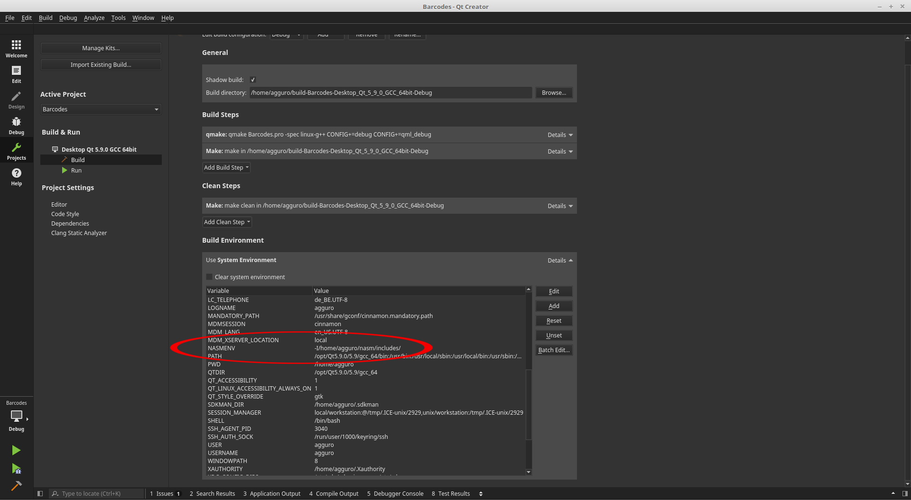

Instead of using a simple text editor or like most of us, using Kate (which is a more advanced with syntax highlighting), you can use Qt Creator too. I'm using Qt5 for the moment but other versions should work too but I never tested it.
Using Qt Creator you have the debugger that goes with Qt so you don't really an external debugger for you programs. Also you can add asm source files to your project only... not without some intervention. for instance the syntax highlighting for asm files doesn't work on my system and asm sources are always defined as DISTFILES or said in other words, they will always reside in the Other Files directory of your project. But let me show you how you can resolve this. I Googled the solution for you and put it here for my later reference and your convenience.
To solve this problem I've found this post on Stackoverflow.
What you have to do after you've created your C/C++ project (or perhaps even your assembly project) is to add following lines to your .pro file.
QMAKE_EXTRA_COMPILERS += nasmNASMEXTRAFLAGS = -f elf64 -g -F dwarfOTHER_FILES += $$NASM_SOURCESnasm.output = ${QMAKE_FILE_BASE}.onasm.commands = nasm $$NASMEXTRAFLAGS -o ${QMAKE_FILE_BASE}.o ${QMAKE_FILE_NAME}nasm.input = NASM_SOURCES
You can add or remove nasm options in NASMEXTRAFLAGS = . Then all your asm sources, or at least the ones who needs to be assembled must go in the next line of your .pro file:
NASM_SOURCES +=
Your final .pro file could be looking like this assuming you created a testasm project:
QT += coreQT -= guiCONFIG += c++11TARGET = testasmCONFIG += consoleCONFIG -= app_bundleTEMPLATE = appSOURCES += main.cpp# The following define makes your compiler emit warnings if you use# any feature of Qt which as been marked deprecated (the exact warnings# depend on your compiler). Please consult the documentation of the# deprecated API in order to know how to port your code away from it.DEFINES += QT_DEPRECATED_WARNINGSQMAKE_EXTRA_COMPILERS += nasmNASMEXTRAFLAGS = -f elf64 -g -F dwarfOTHER_FILES += $$NASM_SOURCESnasm.output = ${QMAKE_FILE_BASE}.onasm.commands = nasm $$NASMEXTRAFLAGS -o ${QMAKE_FILE_BASE}.o ${QMAKE_FILE_NAME}nasm.input = NASM_SOURCESNASM_SOURCES += test.asm
Qt5 uses Kate's syntax highlighting files, so we need to locate nasm.xml for Kate and copy it to the Tools/QtCreator/share/qtcreator/generic-highlighter/ directory where Qt is installed. For Qt5 on my system it is /opt/Qt5.7.1/Tools/QtCreator/share/qtcreator/generic-highlighter/
If Qt is already opened, close the application and re-open it. Browse to your .asm source file and you should see the code highlighting doing his work.
For a perhaps better explaination you can read the articles/posts I've found on the internet.
https://forum.qt.io/topic/51139/force-qt-creator-to-use-a-syntax-highlighting-for-asm-files
You can download an up to date nasm.xml file with more instructions defined on this website too.
One remark: If you should use your own nasm.xml file and syntax highlighting doesn't work then you have to put the right mime-type to text/x-asm in the next line of nasm.xml:
<language name="Intel x86 (NASM)" section="Assembler" version="3" kateversion="2.3" extensions="*.asm" mimetype="text/x-asm" author="Nicola Gigante (nicola.gigante@gmail.com)" license="GPLv2+">
The only thing we need to set up is the NASMENV. We all know that we can set a NASMENV environment variable to point to a directory of include files. This is usually done in the file .bashrc in your home directory. This is ok for using nasm in a terminal but when we start Qt, the IDE isn't aware of this setting. We need to set NASMENV in another file so Qt can 'see' this setting. After a while googling and with some trial and error attempts I found that this variable needs to reside in the file .profile also in your home directory. a note: I'm using Linux Mint)
So open a terminal, Type nano ~/.profile and add export NASMENV=-I/home/agguro/Repository/Github/nasm/includes/ at the end of this file, don't forget the trailing /.
Start or restart Qt and look in Projects (left icon menu) Build Settings and expand the use System Environment. In that list you can look for NASMENV= and it should point to the directory where your include files are.
